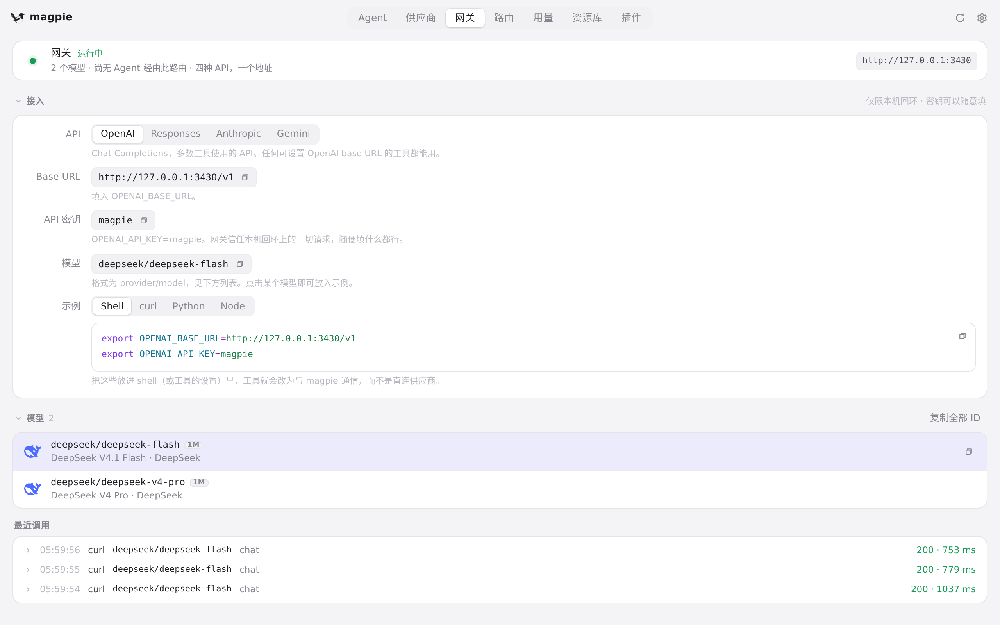
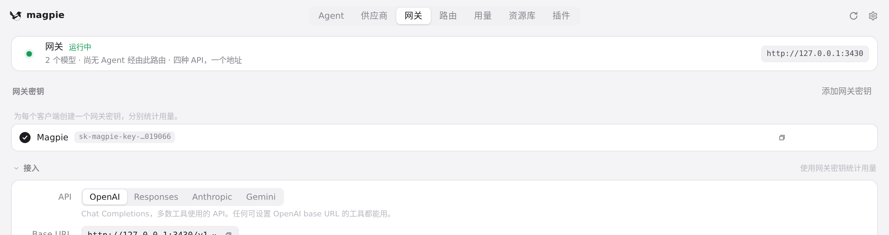
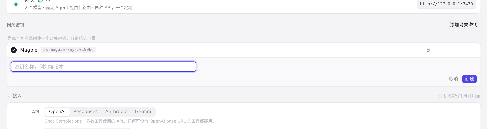
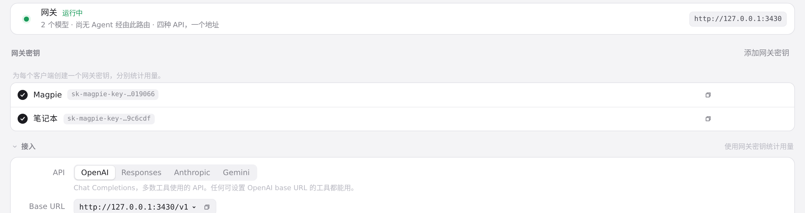
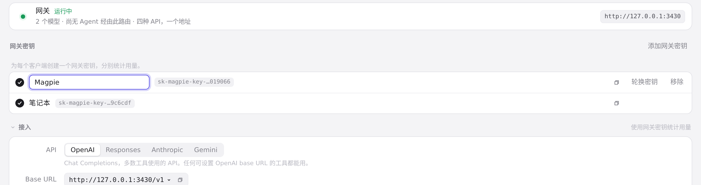
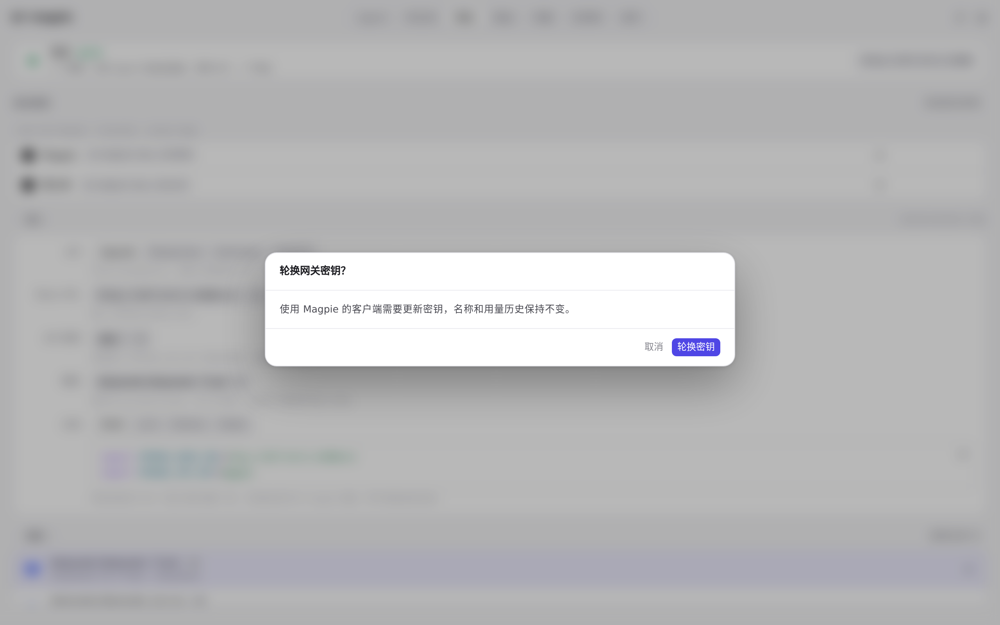
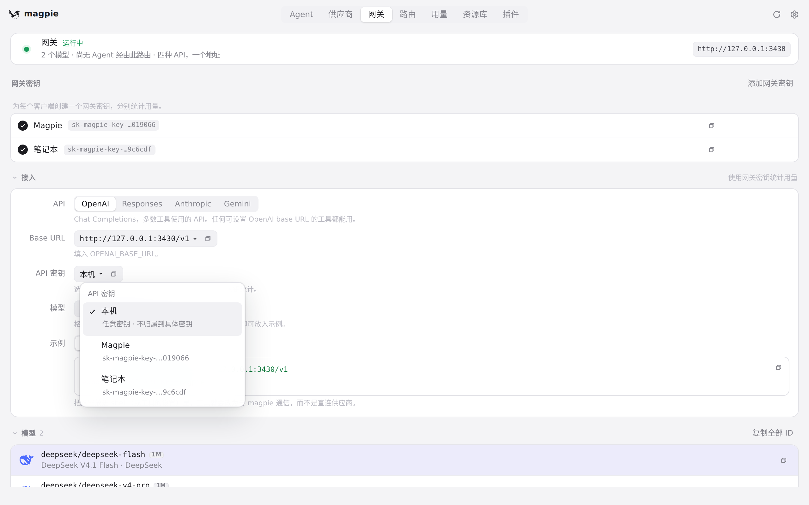
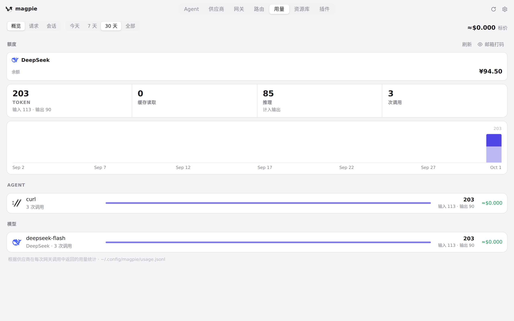
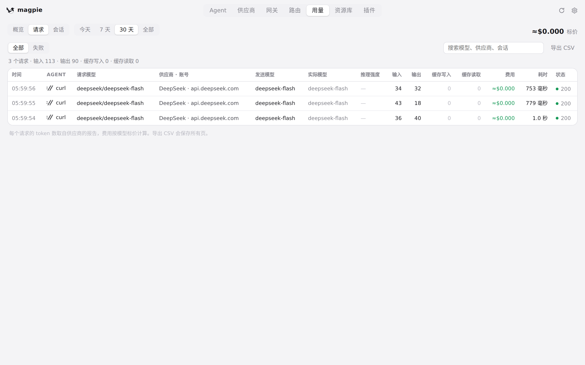

#344 界面预览
commit 1c2c349 · 回到 PR · 网关页新增「网关密钥」区块（只在开启局域网共享后显示）：可创建、复制、就地重命名、启停、轮换和移除具名密钥，轮换/移除前有确认框；「接入」区改为可选本机或局域网地址，并从「本机」或某个已启用的网关密钥里选密钥来生成示例；用量页与请求页新增按网关密钥分组/筛选的入口。
红线是鼠标走过的轨迹，红色圆环是一次点击；底部文字是这一步在做什么。空格暂停，← → 逐段查看。

开启共享后出现「网关密钥」区块并创建密钥 · 局域网共享关闭时的网关页

开启共享后出现「网关密钥」区块并创建密钥 · 共享开启后的「网关密钥」区块

开启共享后出现「网关密钥」区块并创建密钥 · 新密钥的名称输入框

开启共享后出现「网关密钥」区块并创建密钥 · 创建后的密钥列表

密钥的改名、轮换确认与接入区的密钥选择 · 重命名的输入框

密钥的改名、轮换确认与接入区的密钥选择 · 轮换密钥前的确认框

密钥的改名、轮换确认与接入区的密钥选择 · 密钥下拉：本机与已启用的网关密钥

用量页与请求页上看客户端归属的位置 · 用量概览

用量页与请求页上看客户端归属的位置 · 请求列表与筛选